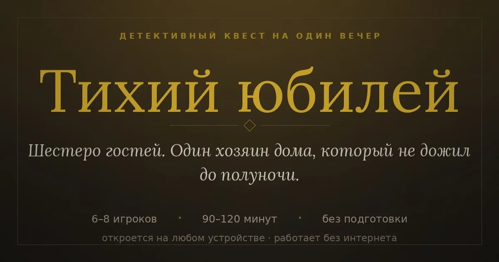

Квест на день рождения для взрослых: как устроить дома за вечер
Ресторан и тосты уже были много раз. Детективный квест превращает обычный день рождения в вечер, который гости вспоминают годами: каждому — роль, у каждого — тайна, а один из сидящих за столом виноват.
Время чтения — 4 минуты

Как это работает
Что такое детективный квест дома
- Перед праздником каждый гость получает карточку персонажа: кто он, что знает, что скрывает и чего хочет добиться за вечер.
- Ведущий (обычно именинник или кто-то из друзей) зачитывает завязку: произошло преступление, и все присутствующие — под подозрением.
- Игра идёт раундами. В каждом раунде открываются новые улики: записки, письма, показания. Гости расспрашивают друг друга, торгуются и хитрят.
- В финале все голосуют, кто виновен, и ведущий читает развязку. Преступник выигрывает, если его не вычислили.
Подготовка
Как подготовиться за 30 минут
- За 3–5 дней разошлите гостям их роли — тогда они успеют придумать костюм или хотя бы аксессуар.
- Распечатайте улики и конверты раундов (в готовом сценарии всё уже свёрстано под печать на A4).
- Продумайте, когда играть: удобнее всего после горячего, когда все за столом, — игра занимает 1,5–2 часа.
- Поставьте тихую музыку и приглушите свет — атмосфера делает половину работы.
Почему детектив
Чем квест лучше обычных конкурсов
- Не нужен аниматор и не нужно уметь вести: правила и реплики ведущего уже написаны.
- Участвуют все, даже стеснительные: у каждого есть свои секреты и своя цель.
- Подходит для 6–8 человек — типичной домашней компании.
- Именинник не теряется на фоне игры: роль хозяина вечера можно отдать ему.
Частые вопросы
Сколько нужно гостей?
Сценарий «Тихий юбилей» рассчитан на 6–8 игроков плюс ведущий; часть ролей необязательные.
Можно ли попробовать перед покупкой?
Да, есть бесплатный мини-детектив — короткая загадка, чтобы понять формат.
Подойдёт ли для семьи с детьми?
Взрослые сценарии рассчитаны на гостей от 16 лет. Для детей лучше простые игры или отдельный детский квест.
Что нужно распечатать?
Карточки ролей, улики и конверты раундов — всё в одном PDF под обычный принтер.
А есть квест на день рождения ребёнка?
Да: «Пропавший торт» — детективный квест для детей 8–12 лет, 6–8 игроков. Торт исчезает, пока гости играют в прятки, а дети сами находят, кто его унёс.
Квесты, игры и программы
Чем занять гостей на корпоративе: идеи развлечений без ведущегоИдеи развлечений на новогодний корпоратив и офисный праздник: детективный квест для команды, игры за столом, к…Игры на Новый год для компании взрослых: 10 идей без подготовкиЧем занять гостей в новогоднюю ночь: детективный квест, настольные и словесные игры, игры онлайн для компании.…Как написать детективный квест для вечеринки самому: пошаговый планКак придумать сценарий детективного квеста для друзей или коллег: преступление, виновный, роли с тайнами, улик…Как провести детективный квест дома: сценарий и советы ведущемуКак устроить детективную игру для друзей дома: сколько нужно игроков, как раздать роли, как вести раунды и гол…Бот-кликер для Battlesmiths — клиент для Windows, демо 3 дняБот-кликер для игры Battlesmiths с клиентом под Windows. Демо-режим 3 дня бесплатно, продление на любое число …Бесплатный мини-детектив онлайн «Дело о витрине» — играть за 3 минутыКороткий детектив онлайн: прочитайте показания, изучите улики и найдите вора за три минуты. Бесплатно, без рег…Бот для Dungeon Crusher («Крушители Подземелий») — автобой, фарм, заданияБот-кликер для Dungeon Crusher: Soul Hunters — автобой, сбор ресурсов, ежедневные задания и управление энергие…Бот для Catacombs World (BlueStacks) — фарм на автоматеБот-кликер для фарма в Catacombs World, работает с эмулятором BlueStacks на ПК. Скачать в теме ВКонтакте, паро…Бот для Dandy's World (Roblox) — ходит по этажу, жмёт F и лечитсяМини-бот для Dandy's World в Roblox: заходит в игру, ходит по этажу, жмёт F, использует предметы 1–3 и аптечку…